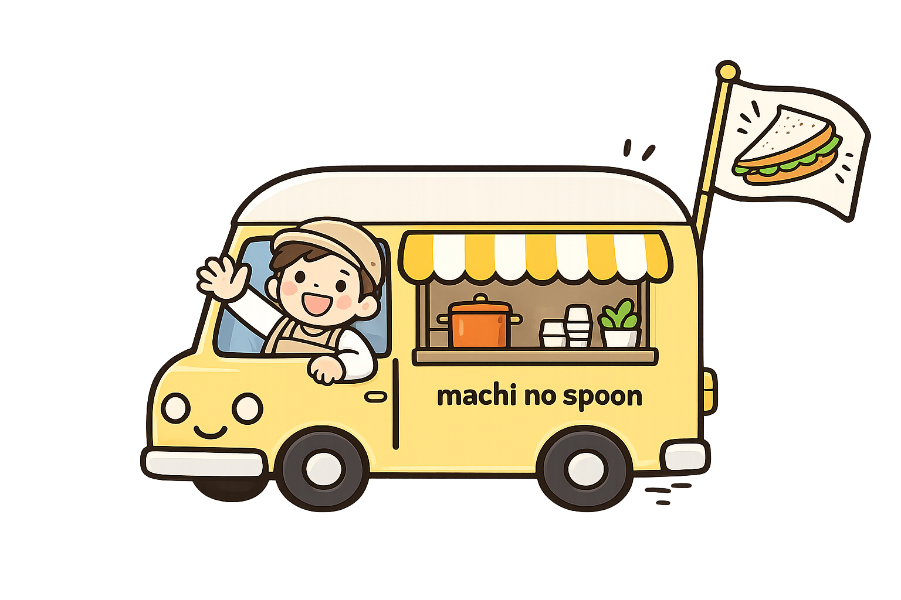
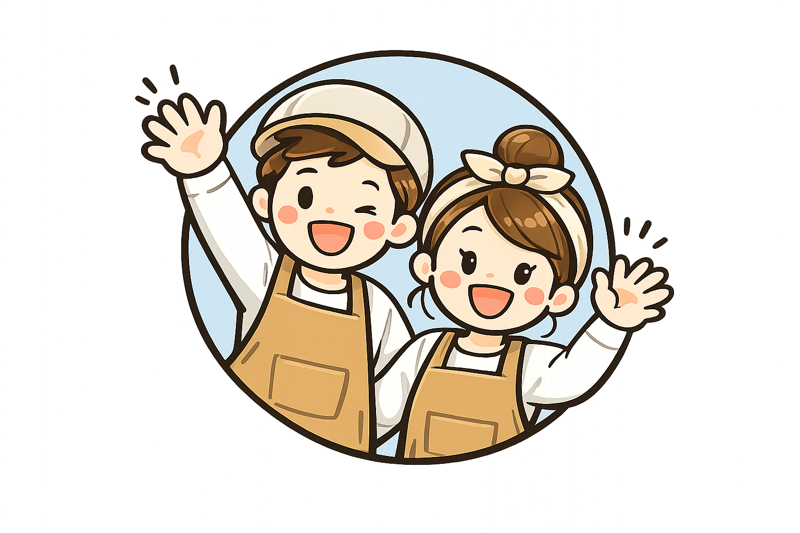
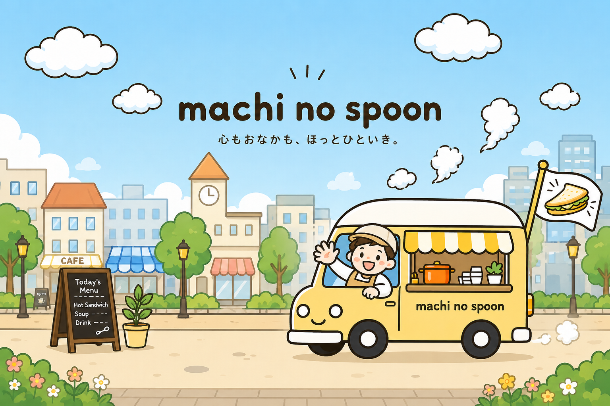

今日以降の予定を自動で判定して、いちばん近い出店を大きく表示します。
今月・来月の出店予定をまとめてチェック。日付をタップで詳細が開きます。
SNSでは流れてしまう「人柄」を、ここでしっかりお伝えします。

「いそがしい毎日でも、あたたかい一杯でほっとひと息ついてほしい」。そんな思いから、夫婦ふたりで小さなキッチンカーをはじめました。
素材を活かしたスープと、その場で焼き上げるホットサンド。まちのいろんな場所で、みなさんとお会いできるのを楽しみにしています。

公園、マルシェ、駅前、朝市。machi no spoon は地域のいろいろな場所に出店しています。あたたかいスープとホットサンドで、その日その場所に小さなひと息を。
地域のお店やイベントとつながりながら、まちの「ほっとする時間」を届けていきます。
出店の様子や、できたての一杯。日々のひとコマをのぞいてみてください。
イベント出店、受付中です。地域のお祭り・マルシェ・企業イベント・学校行事など、お気軽にご相談ください。